Activité Introduction
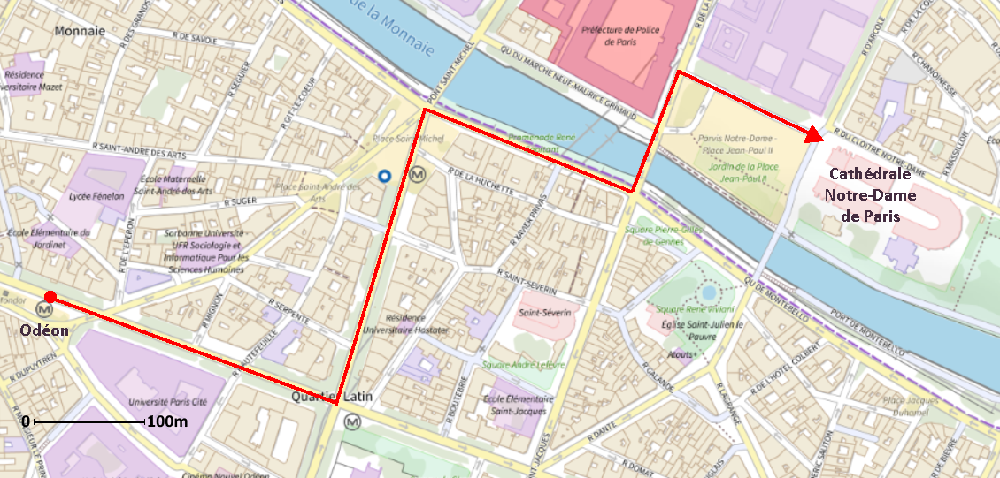
Emile se promène dans les rues de Paris. Il se trouve à la sortie du métro Odéon et se rend à pied à la cathédrale Notre-Dame de Paris. Il utilise son GPS en mode piéton. Il fait des pas d'un mètre environ. Parmi les programmes suivants, lequel correspond à celui utilisé par le GPS d'Emile pour rejoindre la cathédrale ?
GPS est le sigle de Global Positioning System, qui signifie « système de localisation mondial ».
Programme 1
Programme 2
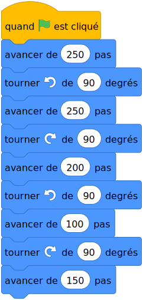
Programme 3
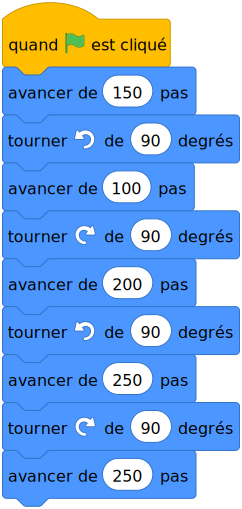
Algorithme :
Dans la vie courante :
Un algorithme est une liste ordonnée d'instructions très simples permettant de résoudre un problème.
Exemple :
Recette du fondant au chocolat.
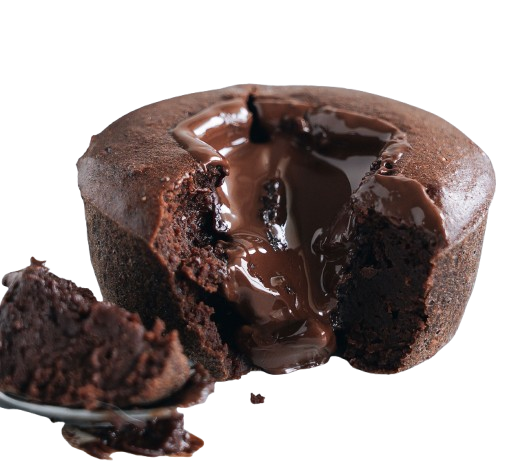
Ingrédients
- Chocolat noir : 200g
- Oeufs : 3
- Farine : 50g
- Sucre en poudre : 100g
- Beurre : 100g
Préparation
- Préchauffez votre four Th.6 (180°C).
- Dans une casserole faire fondre le chocolat et le beurre coupé en morceaux à feu très doux.
- Dans un saladier, ajoutez le sucre, les oeufs, la farine et le chocolat. Mélangez bien.
- Beurrez et farinez votre moule et versez la pâte à gâteau.
- Faites cuire au four environ 20 minutes.
- Laissez-le refroidir puis démoulez-le.
On retrouve aussi des formes d'algorithme dans les mode d'emploi d'appareil ménager.
Composition d'un algorithme :
Un algorithme se décompose en trois grandes parties :
- Un première partie d'initialisation qui permet de définir les informations dont on a besoin au départ (aussi appelé les conditions initiales)
- Une seconde partie de traitement des données qui est composé d'une succession d'instruction à appliquer. C'est le coeur de l'algorithme.
- Une troisième partie appelée sortie. C'est la réponse (visuel, textuel, sonore, etc...) que nous renvoie l'algorithme, le résultat recherché.
Exemple :
Dans la recette du fondant au chocolat :
- L'initialisation est la partie qui donne les ingrédients nécessaires à la recette.
- Le traitement des données est suivi de la préparation de la recette.
- Le rendu (ou la sortie) est le gâteau une fois terminé.
Remarques :
- Un algorithme peut-être traduit, grâce à un langage de programmation, en un programme pour l'exécuter sur un ordinateur. Dans la suite un programme désignera donc un algorithme retranscrit pour un ordinateur.
- La programmation au collège est basé sur le programme Scratch qui sera la base des exemples.
Les différents outils :
Déclenchements :
Pour démarrer un programme, il faut un point d'entrée, d'un déclenchement. Cela peut-être l'appui sur le drapeau dans scratch, l'appui sur une touche, etc...
Exemples :
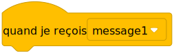
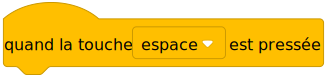
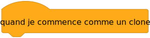
Remarque :
- Il est possible de lancer plusieurs programmes à la fois et donc plusieurs déclenchements en même temps
Boucles :
Les blocs boucles permettent de répéter un groupe d'action. Il en existe plusieurs sortes :
- A répétitions fixe (on connaît le nombre de répétitions)
- A répétitions conditionnelles (on ne sait pas à l'avance combien de fois va s'effectuer la boucle)
- A répétitions infinies (la boucle ne s'arrête pas)
Exemples :
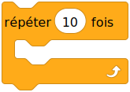
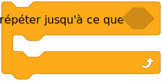
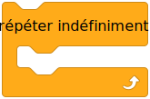
Conditions :
Les conditions permettent d'effectuer certaines actions avec des conditions définies.
Exemples :
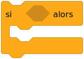
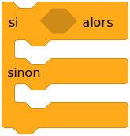
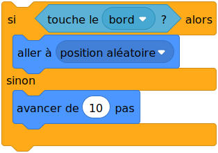
Variables :
Un variable est une « case mémoire » dans laquelle on stocke une information pour pouvoir la réutiliser ensuite. On peut la modifier, extraire et utiliser sa valeur.
Remarques :
- Une variable peut contenir tout type d'information pas uniquement des nombres. Elle peut par exemple contenir du texte.
- Une variable ne se réinitialise pas lors de l'arrêt d'un programme scratch il faut les réinitialiser nous-même.
Un exemple complet de programme :
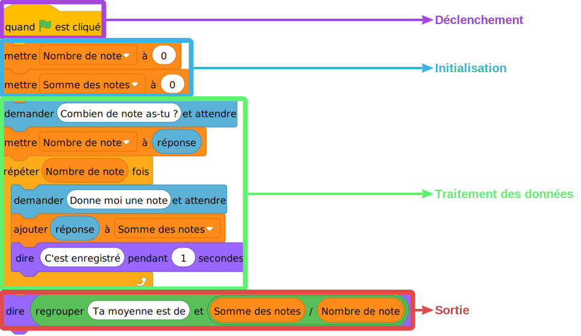